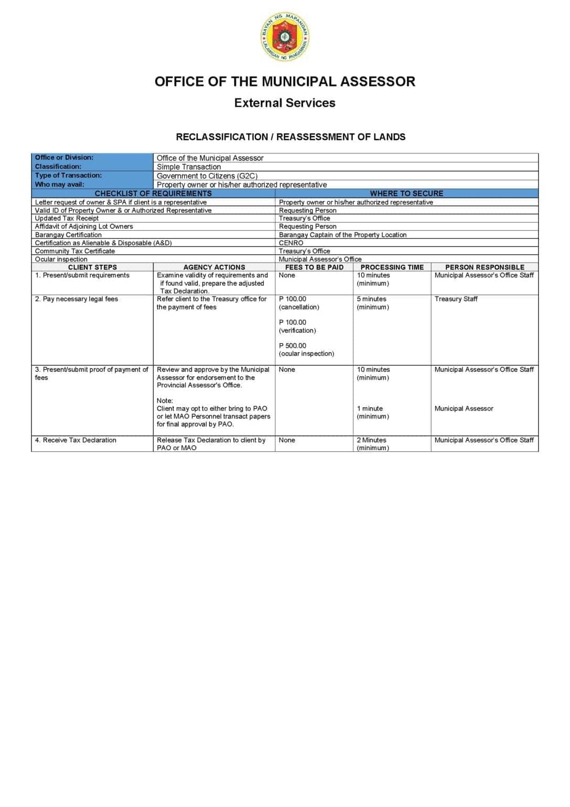

Paglalarawan
The Municipal Assessor's Office conducts reclassification or reassessment of land when there is a change in land use, zoning classification, or other factors affecting the property's assessed value. This may be triggered by rezoning, subdivision, conversion from agricultural to residential or commercial use, or other changes. The Assessor reviews the applicable ordinances, conducts inspection, and updates the Tax Declaration accordingly.
Mga Kinakailangan
- Written request stating the reason for reclassification/reassessment
- Valid Government-issued ID
- Zoning clearance or land use change approval (from MPDC)
- Current Tax Declaration
Prosedura
- Submit written request, valid ID, and supporting documents to the Assessor's Office.
- Staff receives and reviews the application (5 min).
- Assessor reviews zoning/land use changes and conducts inspection (15 min).
- Staff updates the Tax Declaration with the new classification and assessed value (5 min).
- Pay ₱700 at the Treasury Office and claim the updated Tax Declaration (5 min).
Nascanned na Dokumento
Nascanned na pahina mula sa opisyal na Mapandan Citizen's Charter na naglilista ng mga kinakailangan, bayad, oras ng pagproseso, at mga staff na may pananagutan para sa serbisyo.
